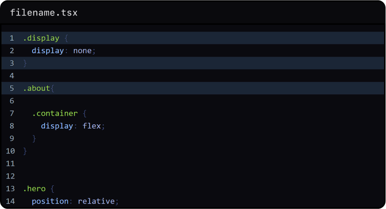

What is a query planner?
Next.js lets developers iterate on their projects faster—but we want to iterate on Next-js itself faster, too.
This year, Next.js surpassed 4 million npm downloads for the first time.
With over 2,400+ contributors, the core team here at Vercel must craft
a developer experience to keep up with such a vast community to develop,
test, build, and publish Next.js.
Next.js had another first this year:
introducing Rust to its core.
While adding Rust brings greatly improved
performance for developers using Next.js, the tradeoff was an increase in
Cl time to publish new releases due to the prolonged process of building Rust binaries.
What is a query planner?
Next.js lets developers iterate on their projects faster—but we want to iterate on Next-js itself faster, too.
This year, Next.js surpassed 4 million npm downloads for the first time.
With over 2,400+ contributors, the core team here at Vercel must craft a developer
experience to keep up with such a vast community to develop, test, build, and publish Next.js.
What is a query planner?
While adding Rust brings greatly improved performance for developers using Next.js, the tradeoff was an increase in Cl time to publish new releases due to the prolonged process of building Rust binaries.
What is a query planner?
the core team here at Vercel must craft a developer experience to keep up with such a vast community to develop, test, build, and publish Next.js.
What is a query planner?
While adding Rust brings greatly improved performance for developers using Next.js, the tradeoff was an increase in Cl time to publish new releases due to the prolonged process of building Rust binaries.